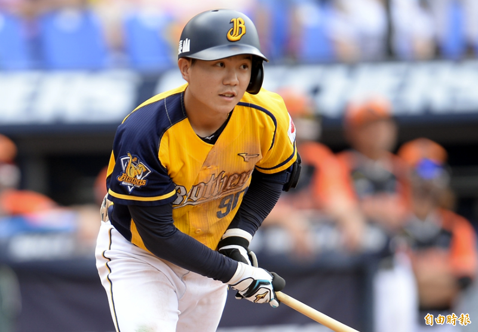
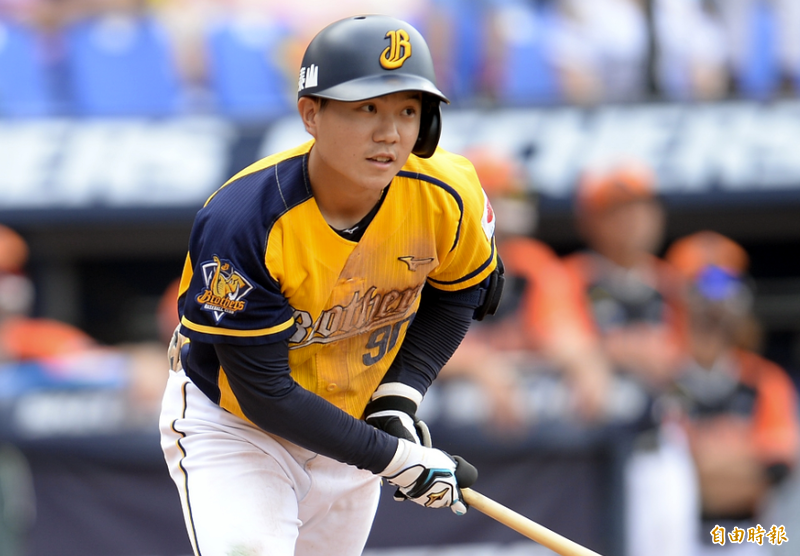

江坤宇
江坤宇（2000年7月4日—），為台灣棒球選手，目前效力於中華職棒中信兄弟，守備位置為游擊手。於2018年季中選秀中被中信兄弟以第三輪第十一順位選進。
江坤宇（2000年7月4日—），為台灣棒球選手，目前效力於中華職棒中信兄弟，守備位置為游擊手。於2018年季中選秀中被中信兄弟以第三輪第十一順位選進。
人氣很旺的江坤宇綽號有「團寵草莓牛奶小可愛游擊柯基國民兒子小白豬老將小可怕江督嘟嘟嘴天竺鼠車車」， 他一一解釋，「天竺鼠車車應該是因為之前看卡通被看到，然後就...變成這樣」， 草莓牛奶則是「因為前年領MVP時被灑草莓口味的高蛋白」，至於小可愛，他說：「這我真的不知道為什麼。」 另外還有『小可怕』，他說明：「打得好的時候會變成小可怕」。
至於被叫小白豬，江坤宇表示這是「詹ㄟ（詹子賢）取的，因為他是大白豬。」另外還有被叫做柯基，江坤宇表示：「因為我腿短。」
另外高中的時候成晉（樂天桃猿）還有給他起專屬暱稱，叫做「嘟嘟嘴」。江坤宇還表示，高中的時候都被叫江督，「這是我爸的名字。」另外還有『老將』，「可能是因為我長得比較老吧。」最後江坤宇也表示「來者不拒」，以上這些綽號都可以，叫起來不會奇怪。